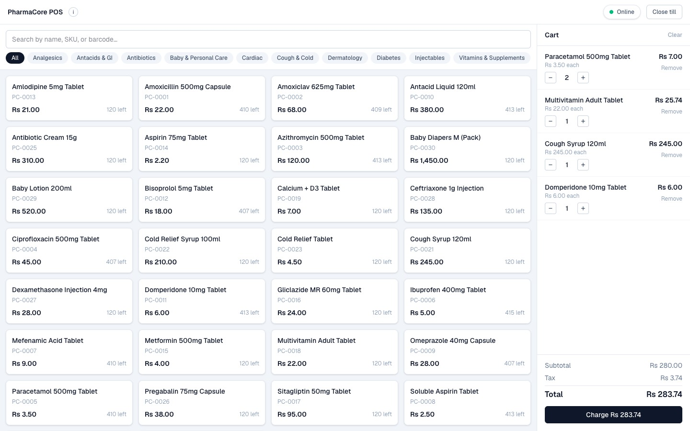
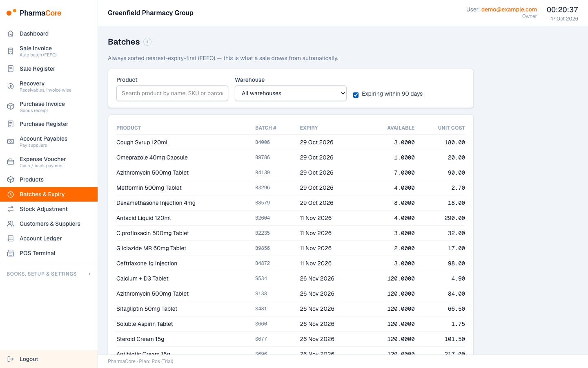

Case study · Business systems
Multi-tenant pharmacy ERP and POS
A multi-tenant pharmacy ERP with double-entry accounting, batch-level FEFO (first expired, first out) inventory and an offline-capable retail point of sale.
At a glance
- Who it's for
- Pharmacy owners, distributors, accountants, cashiers and inventory staff.
- Core stack
- Next.js, FastAPI, PostgreSQL, Celery
- What sets it apart
- Pharmacy-specific stock and expiry mechanics sitting on a tamper-resistant ledger, with tenant isolation enforced in the database itself.
What it looks like in use
The till screen a cashier works from, including what it shows when the shop loses its internet connection.
Riverside branchShift open Offline, sales are being saved
Tap a product to add it
Paracetamol 500mg
Rs 3.50
Rs 3.50
Cough Syrup 120ml
Rs 245
Rs 245
Multivitamin Adult
Rs 22
Rs 22
Domperidone 10mg
Rs 6
Rs 6
Ibuprofen 400mg
Rs 5
Rs 5
Metformin 500mg
Rs 4
Rs 4
Cart
Paracetamol 500mg
Rs 3.50 each, quantity - 2 +Rs 7.00
Rs 3.50 each, quantity - 2 +Rs 7.00
Cough Syrup 120ml
Rs 245 each, quantity - 1 +Rs 245.00
Rs 245 each, quantity - 1 +Rs 245.00
SubtotalRs 252.00
TaxRs 3.50
TotalRs 255.50
Charge Rs 255.50
Waiting to send
Sale saved on this tillQueued
Sale saved on this tillQueued
Sale saved on this tillQueued
They are sent when the connection returnsAutomatic
Behind the scenes
Stock close to its expiry date is picked up by a daily checkDaily check
When a sale is posted, the soonest-expiring batch is used firstAutomatic
Real screens from the working product (sample data)


A day at the till
-
Maria rings up a sale
She taps the products on the till and takes payment, the same as on any modern counter.
-
The internet drops, selling carries on
The till saves each sale on its own and keeps a queue, so customers are never turned away.
-
Stock with the nearest expiry goes first
When a box is sold, the stock that expires soonest is taken first, so medicines are used before they expire.
-
The books balance on their own
Every sale updates the accounts automatically, and the system refuses any entry that does not add up.
-
Each pharmacy sees only its own data
Each pharmacy's data is kept separate, enforced in the database itself.
The challenge
Pharmacies and distributors need stock tracked by batch and expiry, packs sold loose or by box, trade schemes applied at invoicing, and books that reconcile to the ledger.
Generic ERPs rarely handle expiry-driven picking or recoverable manufacturer claims, and retail counters cannot stop selling when the connection drops. The brief also required one login to span several businesses, such as an accountant serving several pharmacies. Roles are strict: cashiers must not see profit and managers must not see equity. The design must also be able to serve other variable-unit industries later.
The solution
A Next.js frontend talks to a FastAPI service over PostgreSQL. Every tenant table carries a tenant id and is protected by row-level security set per request from the login token, so isolation does not rely on application filters alone. Database triggers protect financial postings.
Inventory, sales and POS flows all post balanced journal entries atomically. The retail terminal caches the catalogue in the browser and queues sales locally for later sync. Billing is provider-agnostic, with manual plan activation for the first release.
For your technical teamhow it works under the hood
Mechanism: an offline sale reaching the ledger
Key features
What the system does, as built in the codebase.
- 01
Double-entry accounting
Chart of accounts, journal entries with reversal, fiscal period locks, trial balance, profit and loss, balance sheet and general ledger.
- 02
Batch-aware inventory with FEFO
Products, warehouses, goods receipts, expiry-sorted batch suggestions and stock adjustments, including manufacturer claims. At finalize the system picks the nearest-expiry batch automatically (one batch per line; if none covers the quantity, the sale needs the line split by hand) and locks the batch during the sale so two counters cannot oversell it.
- 03
Sales invoicing with trade schemes
A draft-to-finalize flow with cost of goods taken from the specific batch sold (batch-level costing) and bonus lines from a rule engine.
- 04
Offline-capable retail POS
A full-screen terminal with a local catalogue cache, offline queue, shifts, end-of-day report and split payments.
- 05
Receivables and payables aging
Buckets by days past each party's payment terms.
- 06
PDF documents
A4 invoices, thermal receipts and shift reports.
- 07
Onboarding and role-based access
A guided setup wizard, team invitations and a code-defined permission matrix covering eight roles, including owner, admin, accountant, manager and cashier.
- 08
Expiry alert job
A daily scheduled task identifies and logs stock nearing expiry. There is no email or SMS channel yet.
How it fits together
From a back-office or counter request to a balanced ledger entry.
- Next.js web appback office and POS terminal
- Browser storelocal catalogue cache, offline sale queue
- FastAPI serviceJWT auth, RBAC, tenant-scoped sessions
- PostgreSQLrow-level security, ledger triggers
- Background workersCelery and Redis for alerts
- Offline POS sales sync to the API when connectivity returns, posting invoices and journal entries.
- A billing adapter gates plan features.
Implementation notes
Engineering decisions worth knowing about.
Row-level security
The API uses a non-superuser database role and a transaction-local tenant setting on every request.
Ledger integrity in the database
A balance-check trigger, immutable posted entries and locked system accounts enforce correctness. A later migration closed a reversal gap.
Permission matrix and account visibility
Permissions are defined in code, with row-level account visibility for roles that may see only part of a report.
Token handling
JWT access tokens with rotating refresh tokens, tenant switching, and password reset tokens stored hashed.
Provider-agnostic billing
A billing adapter with a manual provider supports plan gating.
Deliberate offline oversell handling
A stock constraint is relaxed only on the sync path, so offline sales are never rejected. Re-sending a queued sale never double-posts (idempotent sync).
End-to-end scripts
Tests are end-to-end scripts that run against a live API and database, including cross-tenant and paging checks, with no unit-test suite or CI. Tenant isolation is tested adversarially: a second tenant tries to reach every record type and must get "not found".
Technology stack
Taken from the project's dependency and config files.
- Frontend
- Next.js (App Router)
- React
- TypeScript
- Tailwind CSS
- TanStack Query
- Zustand
- Dexie
- React Hook Form
- Zod
- Backend
- FastAPI
- SQLAlchemy 2.0
- Alembic
- Pydantic
- asyncpg
- Data
- PostgreSQL with trigram search and row-level security
- Redis
- Jobs
- Celery
- Documents
- ReportLab
- Auth
- JWT (python-jose)
- bcrypt
- Infrastructure
- Docker Compose for local development
For your technical teamtechnology layers
Technology stack by layer
Business value
What the system enables. No numbers are claimed.
- Keeps each business's data isolated while letting one user work across several businesses.
- Allocates stock nearest-expiry-first and costs each sale at the cost of the batch it came from.
- Lets counters keep selling during outages and reconcile later.
- Produces books that stay balanced because the database refuses unbalanced or edited postings.
- Supports different plan tiers (accounts, standard, POS) from one codebase.
Need a system like this built?
Tell us what it needs to do and we will scope it with you on a call.